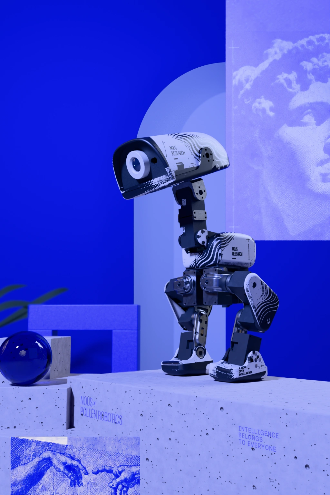

Selected work / engineering & experiments
Ambitious systems.
Inspectable proof.
Product experiences, local AI, and open-source work. Connected by a habit of testing the details and keeping the evidence.
01 / WORKKEVIN RAJAN ↙

Actual base render · 1,024 × 1,536 px
01 / FEATURED CASE STUDY
Tiny duck.
Tiny duck.
Big engineering
questions.
A playful product experience became a serious test of progressive imagery, bounded mobile memory, and browser-level verification.
Detail.On demand, within limits.
Explore the case
Fan-made Microduck experience · React Three Fiber / WebGLView the source receipt ↗
02 / THE INDEXSystems, with receipts.
Public work selected from the evidence manifest. Verified results and source-reported claims stay distinct.
Loading…